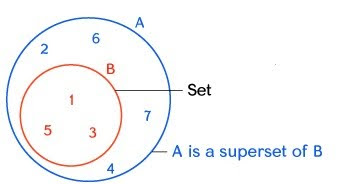
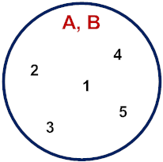

WHAT IS A SUBSET?
A subset can be described as a smaller set that is contained within a larger set. A set can only be considered as a subset of a given set if and only if all its elements are elements of another set.
A subset is a set where all its elements are also found within another, larger (or equal) set, meaning it's a part of the whole, like {1, 2, 3} being a subset of {1, 2, 3, 4, 5} because 1, 2, and 3 are in the larger set.
SUBSET
A set cannot be a subset of another set if one or more of its elements is not present in the other set.
Examples of Subsets
Let us have A = {1,2,3} and
B = {1,2,3,4,5}
Since elements 1, 2, and 3 of set A are also present in set B we can therefore say that “A is a
subset of B” or A ⊂ B.
Let us have P = {1, 3, 4} and Q = {2, 3,4 ,5 ,6}.
The diagram shows that “P is not a subset of Q” or P ⊄ Q since although elements 3 and 4 of set
P are present in set Q, the element 1 is not.
Let us have the following sets: A = {1,3,5}, B = {1,2,3,4,5}, and C = {2,8}
The diagram shows that:
A is a subset of B or A ⊂ B because the elements 1, 3, and 5 of set A are also present in set B.
We can also say that C is not a subset of B or C ⊄ B because although 2 of set C is also an
element of B but 8 is not.

Let us have A = {1, 2, 3, 4, 5} and B = {1, 2, 3, 4 ,5}
The diagram shows
A is a subset of B or A ⊆ B since elements 1, 2, 3, 4, 5 of set A is also present in set B.
The situation where both sets have the same elements is called an improper subset denoted by the
symbol “⊆”.
Let us have A = {1, 2, 3} and B = { }.
If B is an empty set, meaning set B has no elements at all, it suffice to say that all its
elements (which is nothing) belong to set A regardless of the elements present in set A. This
proves that the empty set is a subset of every set.
If one element of a set is missing, it cannot be considered a subset.
Let's Practice: Fill in the Blanks
Let A = {2, 3, 4, 5, 6, 7}, B = {2, 4, 7, 8, 9}, C = { }, and D = {2, 4}. Fill in ⊂, ⊆ or ⊄ to make the statements true.
WHAT IS A SUPERSET?
A superset is a set that contains all the elements of another set with additional elements. This means the larger set contains all the elements of smaller set, and at least one element of the larger set is not present in the smaller set.

Let A = { 1, 2, 3, 4, 5, 6, 7} and B = {1, 3, 5}
From these values we can say that
A is a superset of B or A ⊃ B since set A has all the elements of set B.
_____________________________________________________________________________

An improper superset (⊇) happens when every element of a set is contained in another set.
The diagram shows
A is an improper superset of B or A ⊇ B since elements 1, 2, 3, 4, and 5 of set A are also present
in set B.
Sample Practice:
Let A = {a, e, i, o, u} and B = {a, c, d, e}. Is set A a superset of set B (A ⊃ B) ?
Explain your answer.
A is not a superset of B (A ⊅ B). Since set B has elements c, d, and e that are not present in
set A.
Sample Practice:
Let A = {2, 3, 7, 9} and B= {2, 7, 9}, is A a superset of set B (A ⊃ B) . Prove your answer.
A is a superset of set B (A ⊃ B) since all the elements of set B are present in set A.
Sample Practice
Is A = {7, 9, 11} a superset of B = {5, 7, 9, 11}. Justify your answer.
No. Looking at the cardinality of both sets, it can be observed that set B has the cardinality
of 5 (B |5|) while set A only has the cardinality of 3 (A |3|), therefore it is impossible to
have A as a superset of B (A ⊅ B) since set B has a bigger cardinality than set A.